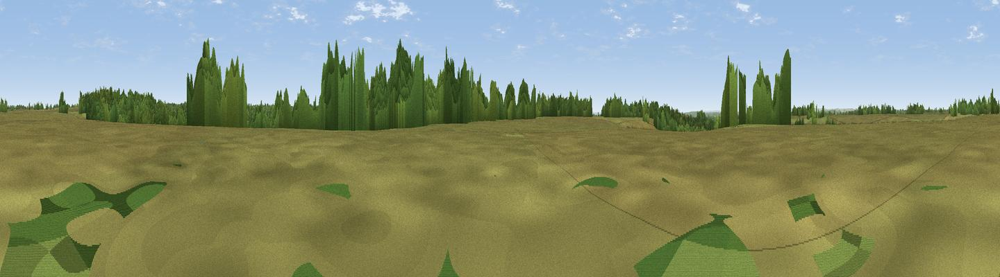

Coopers Hill
#39935 in England · top 69% of its area beats it · near FrithamWhere it is
The exact computed spot (SU 20954 14766). Click the marker for map links.
The view, rendered

A 360° render of this exact spot computed from the terrain model, tree cover and land cover — summer colours, afternoon light, calibrated against photographs of famous viewpoints. Real trees, hedges and buildings will differ in detail.
The panorama
Grey silhouette: terrain skyline in each direction (720 bearings, Earth curvature and refraction included). Dashed green: skyline with trees (+15 m) and buildings (+8 m) as obstacles. Blue strip: how far the ground is visible on each bearing.
Where the view opens
Wedge length = distance to the farthest visible ground on that bearing (vegetation-aware). Rings at 10, 25 and 50 km.
What fills the view
63% grassland · 33% woodland · 3% cropland
Angular shares of the visible panorama (visual magnitude), not map area. Landscape diversity 0.35 (0–1 Shannon).
Key numbers
More beautiful places nearby
The staircase of upgrades: each row has a higher view potential than everything closer. Driving times are estimates from straight-line distance, calibrated against real road routing — check an actual route before setting out.
| Place | Direction | Drive | Score |
|---|---|---|---|
| Viewpoint near Frogham | SW · 2 km | ~5 min | 39.5 |
| Viewpoint near Fritham | S · 2 km | ~6 min | 39.9 |
| Bramshaw Telegraph | NE · 3 km | ~6 min | 40.2 |
| Rushy Flat | NNE · 3 km | ~7 min | 41.8 |
| Viewpoint near Frogham | WSW · 3 km | ~7 min | 42.7 |
| Viewpoint near Bramshaw | ENE · 5 km | ~12 min | 46.6 |
| Viewpoint near West Grimstead | N · 9 km | ~18 min | 62.7 |
| Viewpoint near Martin | W · 17 km | ~29 min | 64.6 |
50.93197, -1.70320 · source: osm peak · position refined by local search. Computed location — check access rights before visiting.